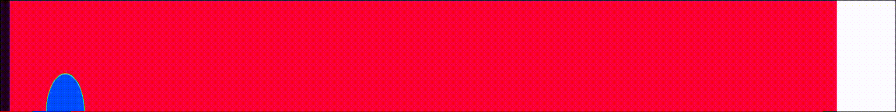

Yuxuan Li
Advancing predictive thermal-fluid simulation through physics-based, reduced-order, and data-driven modeling.
High-fidelity simulation has transformed science, but its computational cost often limits its impact in practical engineering. I believe the next generation of simulation should be predictive, computationally efficient, and broadly accessible.
Ph.D. · University of California, Los Angeles
Project Engineer, Simerics Inc.
My research seeks to bridge this gap through mechanistic modeling, reduced-order methods, and emerging data-driven techniques. The goal is to develop computationally efficient predictive models for complex thermal-fluid systems, making advanced thermal analysis more lightweight, interpretable, and useful for designers working on spacecraft, electronics cooling, and other space- or resource-constrained systems.
I work at the intersection of conjugate heat transfer, reduced-order modeling, and immersed boundary methods, with oscillating heat pipes as a central application for understanding nonlinear transport, start-up, performance limits, and dryout. Across these problems, data-driven modeling is an emerging direction used to complement physics-based simulation rather than replace it.
Research Highlights


Immersed boundary methods (IBM) for heat transfer — temperature field with two heat sources and adiabatic boundaries.

RANS simulation of KRISO Container Ship (KCS) — wave-breaking characteristics.

Compressible flow simulation — late-time density evolution of shock-bubble interactions.